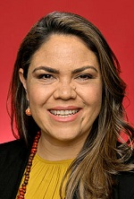

Albanese Ministry
Prime Minister
The Hon Anthony Albanese MP

Deputy Prime Minister
The Hon Richard Marles MP
Minister for Foreign Affairs
Senator the Hon Penny Wong
Treasurer
The Hon Dr Jim Chalmers MP
Minister for Finance
Senator the Hon Katy Gallagher
Shadow Ministry

Leader of the Opposition
The Hon Peter Dutton MP
Deputy Leader of the Opposition
The Hon Sussan Ley MP

Shadow Cabinet Secretary
Senator the Hon Marise Payne
Shadow Minister for Finance
Senator the Hon Jane Hume

Shadow Minister for Indigenous Australians
Senator Jacinta Nampijinpa Price